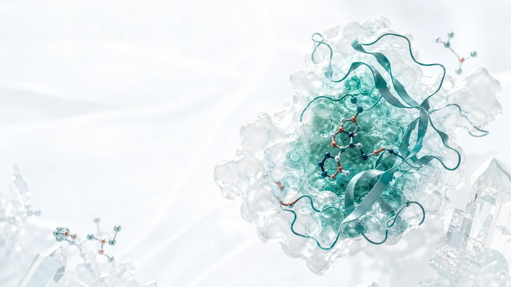

Today · 今日分析
Twist Bioscience 的 AI 輔助藥物發現訂單與 DSPS 營收快速成長，但需求增加、單位價值與產業壁壘不是同一件事。真正稀缺的，可能不是單一 DNA 合成步驟，而是能把海量序列轉成蛋白質、功能數據並回饋模型的整座濕實驗工廠。
從最新公開事件拆解公司策略、臨床數據、交易訊號與資本市場反應。
追蹤公司管線、營收、臨床里程碑與估值假設，適合長期回查。
ASCO、ESMO、AACR 等重要學會資料整理，協助讀者快速理解臨床數據與產業意義。
聚焦 BD、授權、產業策略、平台價值與資本市場重新定價，適合想深入追蹤的讀者。
整理大型藥廠的管線取捨、併購邏輯、專利懸崖與全球競爭格局。
Editorial Standard
深度分析
商業分析文協助讀者快速理解公開事件；深度分析則把公司追蹤、估值框架與產業判斷整理成可反覆使用的研究路徑。